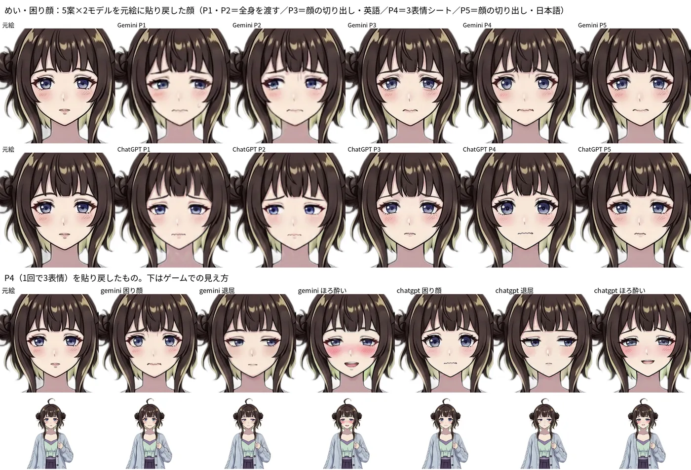
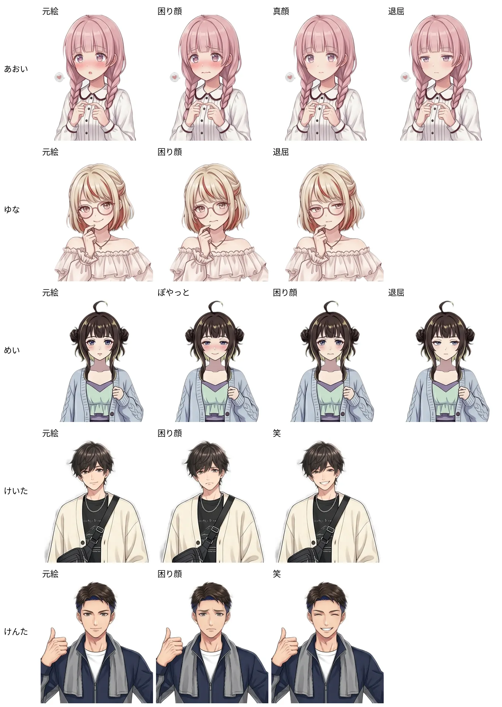
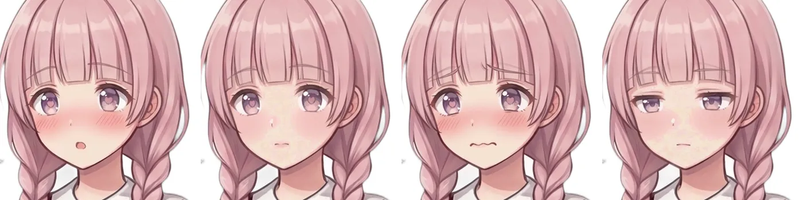
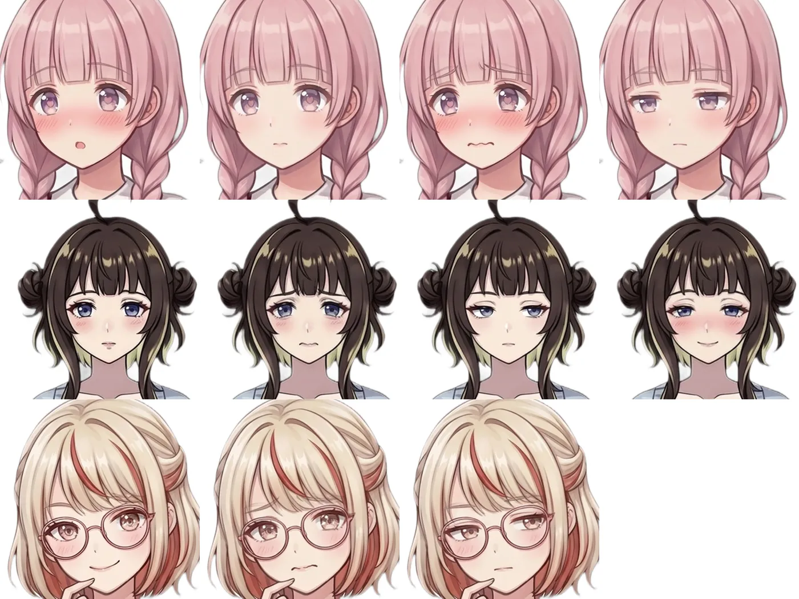
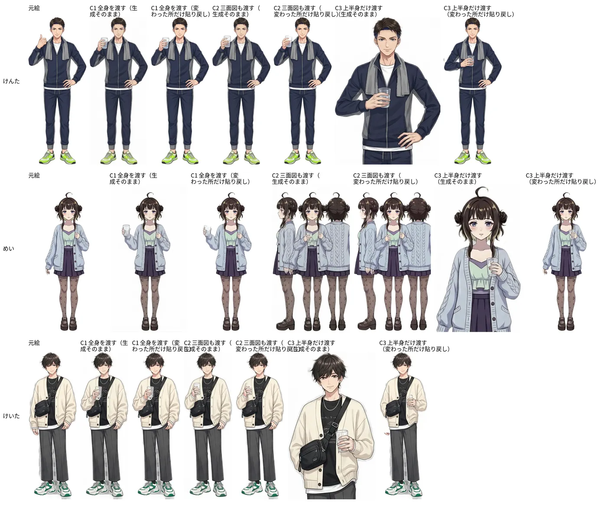
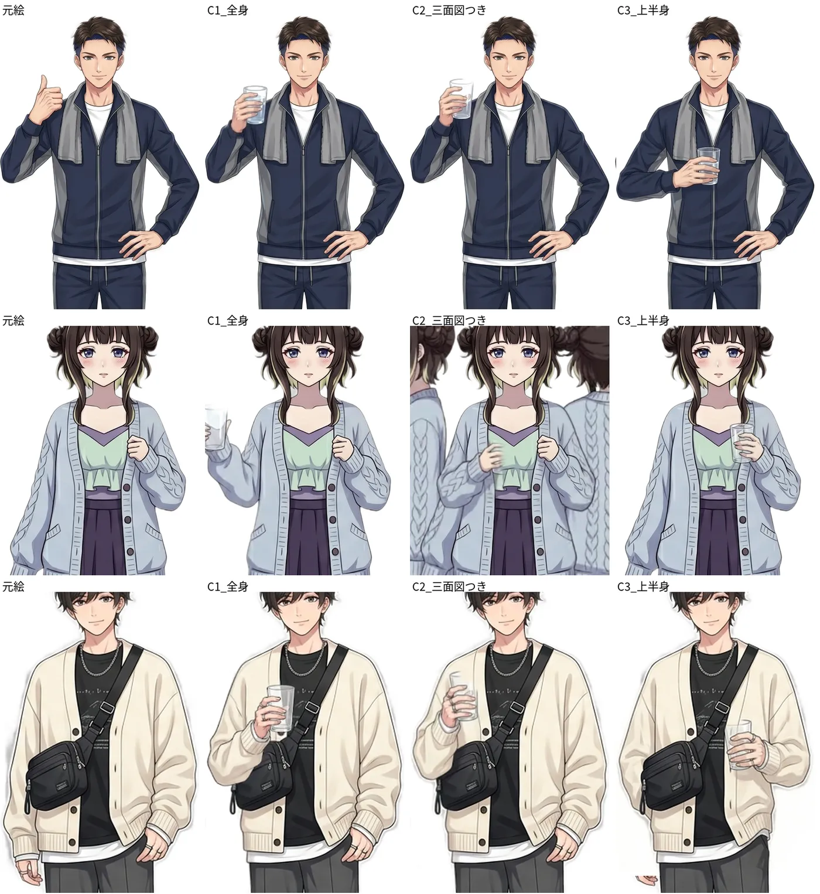
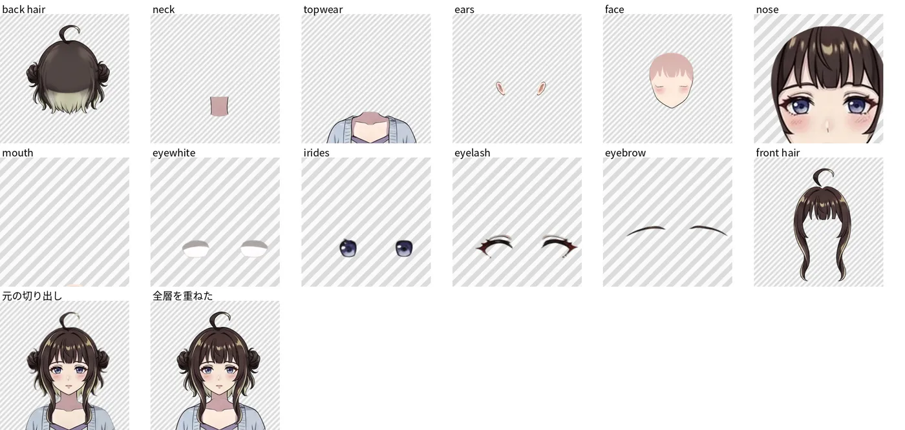
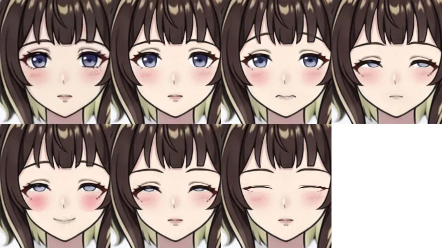
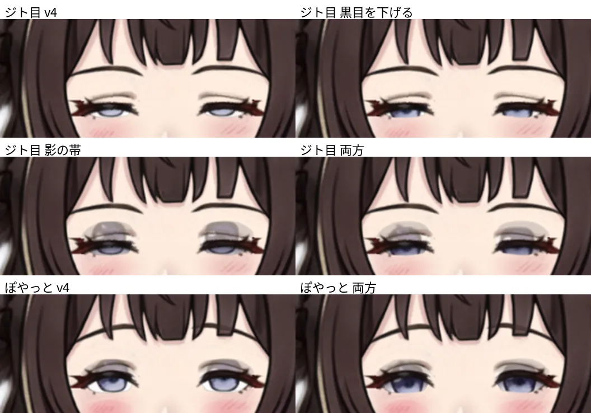
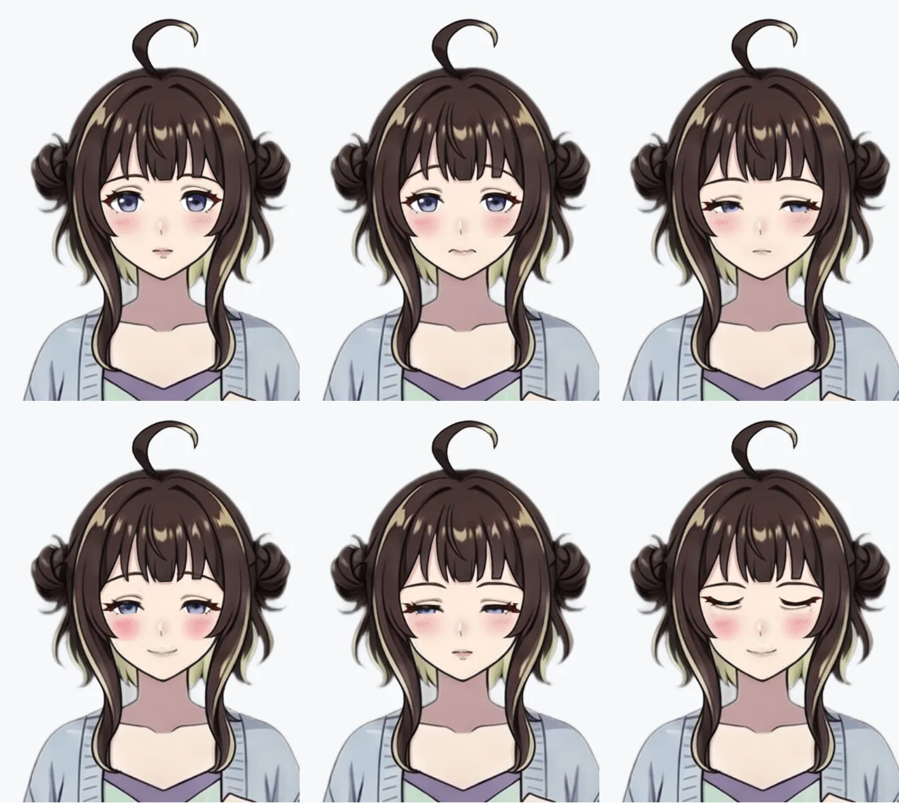

立ち絵の表情・手振り差分を、画像生成AIで元絵を崩さずに作る（研究ノート）
関連：表情差分の作り方（調査）、表情差分テスト（実験1の詳しい記録）
1. やりたいこと
- 合コンゲーム『今夜のスタメン』の試作に出る5人（あおい・ゆな・めい・けいた・けんた）の立ち絵に、表情差分を足す（困り顔・退屈・ぽやっと・真顔・笑）
- できれば手振り差分も足す（例：グラスを持つ。気づきの合図に使える）
- 条件：
- 元絵（全身・背景透過・1枚）の顔立ち・服・線・塗りを崩さない
- 手元は Intel Mac（GPU無し）なので、ブラウザで使える ChatGPT / Gemini の無料枠だけで作る
2. 先行研究（要旨）
調査はサブエージェント（Sonnet）。URLは開いて確かめたものだけ。「→」は、この実験への示唆。
| 問い | 研究 | 要旨 → 示唆 |
|---|---|---|
| 表情だけ変える | GPT-ImgEval（2025） | GPT-4o の編集は、触っていない所の質感・色・細部まで変わる → 編集する範囲を物理的に切り出すのが理にかなう |
| Talking Head(?) Anime 4（2023） | 1枚のアニメ絵から表情・頭の向きをパラメータで動かす → 学習とGPUが要る | |
| AnimeAdapter（2026） | 参照1枚でアニメキャラを固定する SD 用アダプタ → ローカルGPUが要る | |
| 三面図・多視点 | CharacterGen（2024）、StdGEN（2024） | 1枚から多視点を作って3D化する → 3D生成では標準の手順 |
| Animate Anyone（2023） | 参照1枚＋ポーズで動かす。見えない部分の生成は不良設定と自ら書いている | |
| Pose-correlated Reference Selection（2024） | 複数の参照画像で、視点が変わったときの細部の欠落を補う（実写で検証） | |
| → 「三面図を渡すと服・髪が安定する」を直接確かめた論文は見つからなかった。仮説として実験する | ||
| パーツ分け | See-through（2026）、Bunraku（2026） | アニメ絵を、隠れた部分も補ったレイヤーに分解する（Live2D 向け） → GPUが要る。フリルや顔にかかる手は苦手との解説がある |
| Qwen-Image-Layered（2025）、LayerDiffuse（2024） | 画像を透過レイヤーに分けて別々に編集する | |
| → 分けた場合と分けない場合の精度比較は見つからなかった | ||
| 破綻しやすい服 | Garments2Look（2026）、GarDiff（2024）、FIT（2026） | 実写の試着研究では次が崩れる：重ね着、文字、ボタンの数、アクセサリー、細かい柄・ストライプ、ゆったりした服 → アニメにも当てはまるかを見る |
3. 試したことと条件
共通の条件
- モデル：Gemini（アプリ・Flash・無料）と ChatGPT（無料）。10/3 に実施
- 毎回新しい会話で、元絵から作る（前の出力を直させない）
- 取り込み：生成画像を画面に表示して撮る。Gemini の出力は 1024px 前後
- 貼り戻しは自作の Python で行う
- 位置合わせ：特徴点（SIFT）で拡大・回転・ずらしを求める。表情で変わる目・口の点は外れ値として捨てられ、髪・輪郭で合う
- 色合わせ：変わらない外周で、生成と元絵の同じ画素を比べ、色の写し方（3×3行列＋ずらし）を最小二乗で求める
- 重ね方：表情は顔の中心の楕円だけ。手振りは「元絵との差が大きい所」だけを、ぼかして重ねる
実験1：プロンプト5案 × 2モデル（めい・困り顔）
| 案 | 渡すもの | 中身 |
|---|---|---|
| P1 | 全身 | 変えない所を全部並べる |
| P2 | 全身 | 変える部位（眉・目・口）だけを細かく書く |
| P3 | 顔の切り出し | 貼り戻す前提を伝える（英語） |
| P4 | 顔の切り出し | 3表情を1枚に並べさせる |
| P5 | 顔の切り出し | P3 の日本語版 |
実験2：全員の表情差分（12枚）
- P3 を土台にした最終プロンプトで、Gemini で作る
- 表情の内訳：
- あおい：真顔・困り顔・退屈
- ゆな：困り顔・退屈
- めい：困り顔・退屈・ぽやっと
- けいた・けんた：笑・困り顔
実験3：手振り（グラスを持つ）× 3条件 × 服の違う3人（Gemini）
| 条件 | 渡すもの |
|---|---|
| C1 | 全身1枚 |
| C2 | 全身＋三面図（同じモデルで先に作らせたもの） |
| C3 | 上半身だけの切り出し（パーツ分けの代わりに、範囲を分ける） |
| 人 | 服の特徴 |
|---|---|
| けんた | ジャージ上下（無地・ストライプ）、首にタオル。単純 |
| めい | ケーブル編みのカーディガン、ボタン、柄タイツ |
| けいた | カーディガン、文字入りTシャツ、斜めがけバッグ、ネックレス・指輪。元絵が小さい（245×745） |
4. 結果
実験1

| 案 | Gemini | ChatGPT | 外周のずれ（G / C） |
|---|---|---|---|
| P1 全身 | 14 | 16 | 6.8 / 11.3 |
| P2 全身 | 13 | 15 | 7.1 / 9.9 |
| P3 顔・英語 | 21 | 22 | 7.1 / 8.2 |
| P4 3表情シート | 18 | 19 | 10.9 / 12.8 |
| P5 顔・日本語 | 21 | 22 | 7.3 / 8.6 |
- 点数は25点満点（5項目×5点、目視）
- 外周のずれは、位置合わせ後の髪・輪郭の画素差。小さいほど元絵のまま
- 全身を渡すと顔が小さくてぼやける。Gemini は汗やしわ線を足した
- 顔だけ渡すと、どちらのモデルもくっきり返る。英語と日本語の差はない
実験2

- 一覧の図は 10/4 に作り直した。前の図は切り出しを縦横比を合わせずに縮めていて、全員が縦に約1.17倍伸びていた（あおい・ゆなで目立った）
- 12枚すべて、顔立ち・髪・眼鏡・手（ゆなの指）を保ったまま表情だけ変わった。位置合わせは全部成功（特徴点の一致 123〜658点）
- 最初の色合わせ（ヒストグラム合わせ）では、頬の赤みが減る表情（あおいの真顔・退屈）で肌がまだらになった。画素どうしの対応で色を合わせる方法に変えて直った


実験3


| C1 全身 | C2 三面図つき | C3 上半身 | |
|---|---|---|---|
| けんた（単純） | ◎ 指示どおり。ジャージ・タオルも保たれた | ◎ C1 とほぼ同じ（差は見えない） | ◎ 指示どおり（「親指を立てている腕」と動作で指定） |
| めい（編み柄） | ○ 指示どおり。ただし上げた袖のケーブル編みが消えた | × 1枚目ではなく三面図の方を編集して返した | △ 反対の腕にグラスを持たせた。編み柄は保たれた |
| けいた（文字・バッグ） | △ 指示どおり。ただしバッグの位置が動き、Tシャツの文字が崩れた | △ 指示どおり。崩れ方は C1 と同じ | △ 反対の腕。切り出しの下端が手にかかり、境目が出た |
- 元絵から描き直された量（変わった所以外の画素差）：
- C1：7〜9
- C2：8〜11（めいは三面図の方を編集した）
- C3：5〜9
- 「変わった所だけ貼り戻す」と、ここは元絵に戻せる
- 三面図の作成でも誤解が起きた。けんたの髪の内側の青い色を、ヘアバンドとして描いた
- 待ち時間は1枚あたり、送信から完成まで約60〜90秒（画像の取り込み待ちを含む）
5. 分析
うまくいったこと
- 編集範囲を切り出して渡し、元絵に貼り戻すのが最も効く。先行研究（全体を作り直す編集は触っていない所も変わる）と合っている
- 表情差分は無料枠だけで量産できる。1枚あたり約1.5分。モデルの差は小さい
- 貼り戻しの位置合わせは特徴点で自動化できた。手振りも「差が大きい所だけ」を戻せば、服の柄やボタンは元絵のまま残る
- 単純な服（無地・ストライプ）は、手振りでもほぼ崩れない
うまくいかなかったこと
- 左右の取り違え：上半身の切り出しで「見る人から見て左の腕」と書くと、2/3 で反対の腕を変えた
- 全身では 3/3 正しかった
- 「親指を立てている腕」のように動作で指定すると正しかった
- 三面図は効かなかった：
- けんた・けいたは C1 と差が出なかった
- めいは、どちらの画像を編集するかを取り違えた
- 三面図そのものに誤解（髪色→ヘアバンド）が入り、参照にすると誤りが伝わる恐れがある
- 研究側にも、効くという直接の根拠は無かった
- 服の破綻：
- 動かした袖の編み柄が消えた
- 文字は判読できない線になった
- 斜めがけバッグの位置が動いた
- 試着研究の「文字・柄・小物・重ね着が崩れる」と同じ傾向
- 元絵が小さい（けいた）と、生成側も貼り戻しも粗くなる
- 色合わせは、表情で色の量が変わる所（頬の赤み）に引っ張られやすい。変わらない所だけで合わせる必要がある
今後できそうなこと
- 手振りは「動かす腕を動作で指定」＋「全身を渡す」＋「変わった所だけ貼り戻す」を標準にする。三面図は使わない
- 手振りを作るキャラは服を単純に寄せる。動かす側の袖には柄・小物を置かない。文字入りの服は避ける（キャラデザの段階で決める）
- 1枚の手振り差分に表情差分を重ねる「ポーズ×表情」の構成にする（顔は今の貼り戻しをそのまま使う）
- パーツ分けを本気でやるなら、See-through 系のレイヤー分解を、クラウドGPU（ComfyUI 等）で試すのが次の一手。手元の Mac では無理
- 同じ条件で ChatGPT でも手振りを試し、左右の取り違えがモデル固有かを見る（今回は Gemini のみ）
追記（10/3 夜）：実験4 パーツ分け（See-through）
- やりたいこと：生成した顔を貼る方式は、絵柄が元絵と少しずつ違って「微妙」だった。元絵そのものを層に分け、パーツを動かして表情を作れないかを見る（Live2D の簡易版）
- 条件
- See-through 公式デモ（Hugging Face、無料のGPU枠、解像度768、seed 42）
- めいの頭と肩を正方形に切り出して渡した（全身だと正方形に足されて顔が小さくなるため）
- 待ち時間は約80秒
- 結果
- 12層に分かれた：後ろ髪・首・上着・耳・顔（肌）・鼻・口・白目・黒目・まつ毛・眉・前髪
- 顔の肌は目・眉・口の下まで描き足されていた（ただし、閉じた目のような線が薄く残っていた → 消してから使った）
- 「鼻」の層には顔全体が入っていた → 鼻は元絵から小さく切って載せた

- パーツで作った表情（試作ページ「めいの表情パーツ」）
- 動かし方：黒目を白目の中でずらす（目線）／まつ毛を下げて上を隠す（目の開き）／眉を外側を軸に回す
- 口は、前に生成した表情差分から切り出して足した
- 作れた表情：困り顔・退屈・ぽやっと・ジト目・目を閉じる。まばたきも自動でできる

- 分析
- うまくいったこと：目・眉・前髪は元絵の画素なので、絵柄が変わらない。組み合わせで表情が増え、まばたき・目線が安く作れる
- うまくいかなかったこと：口を大きく開ける・笑い目のように、形そのものが変わる表情はパーツを動かすだけでは作れない（絵が要る）。肌の色が元絵よりわずかに明るい
- 今後：
- 他のキャラも同じ手順で分ける（指が顔にかかる ゆな は苦手）
- 開いた口・笑い目だけ、生成か手描きで足す
- ゲームでは
<img>を重ねて表示する
実験4の課題と手直し（10/4 追記）
- 課題1：半目が白目をむいて見える（確認ボードの指摘）
- 原因：黒目は上が濃く下が薄い。まぶたで上を隠すと、薄い下半分だけが残る
- 切り分け：同じジト目で ①そのまま ②黒目をまぶたと一緒に少し下げる ③まぶたの下に影の帯を重ねる ④②＋③ を並べた。②で白目に見えなくなった。③の影の帯は灰色のにじみになって使えなかった

- v5 では、半目のときに黒目をまぶたの下げ幅の3〜4割だけ下げる

- 課題2：ズレて見える、可愛くない
- 動くのが上まつ毛だけで、二重の線・目の影・下まつ毛は元の位置に残る。半目では二重の線がまぶたから離れて浮く
- ジト目・ぽやっと・閉じ目は、開いた目と閉じた目の途中の形にはならない。Live2D でも、閉じ目や笑い目は別の絵で用意することが多い
- 前例と先行研究の調査：表情の作り方（パーツ分けとリグの調査）
- 次の手：状態ごとに目まわりを手で詰める → 閉じ目・笑い目・ジト目は目まわりだけ描き足す（生成で目だけ作って重ねる案もある）
付録
使ったプロンプト（クリックで開く）
実験1（めい・困り顔）
P1 保持列挙型（全身を渡す）
Edit this character sprite. Change ONLY the facial expression to a troubled, slightly worried look: inner ends of the eyebrows raised, eyes glancing down a little, mouth small, closed and slightly wavy. Keep everything else exactly identical: face shape, eye color and size, hair and buns, outfit, pose, hands, line art thickness, coloring and shading, canvas size, framing and the plain white background. Do not redraw or restyle the image.
P2 変更点細分型（全身を渡す）
Same image, same character. Modify only these facial parts: (1) eyebrows: inner ends raised, slight furrow; (2) eyes: same shape and color, pupils looking slightly down-left; (3) mouth: small, closed, slightly downturned wavy line. Leave the bangs, face outline, blush, hair, clothes, body and background unchanged.
P3 顔クロップ型（顔の切り出しを渡す）
This is a head crop cut from my game sprite. I will paste your result back onto the original body, so keep the crop size, head position, angle, outline, hair and colors exactly the same. Change only the expression to troubled: eyebrows raised at the inner ends, worried eyes, small wavy closed mouth. Same art style and line weight, white background.
P4 表情シート型（3つ一度に）
From this head crop, create a 3x1 sheet (three equal panels side by side): troubled, bored, tipsy. In every panel keep exactly the same head position, angle, hair, outline, colors and art style as the input; only the eyebrows, eyelids, eyes, mouth and blush change. Troubled: inner eyebrows raised, small wavy mouth. Bored: half-closed eyes looking aside, flat brows, straight mouth. Tipsy: pink flushed cheeks, unfocused half-closed eyes, small loose smile. White background.
P5 日本語型（顔の切り出しを渡す）
これはゲームの立ち絵から切り出した顔の画像です。生成した画像を元の体に貼り戻すので、構図・大きさ・顔の向き・輪郭・髪・色・線の太さ・塗りは一切変えないでください。変えるのは表情だけです。表情：困り顔（眉の内側を上げた八の字眉、少し不安そうな目、小さく波打った閉じた口）。背景は白のまま。
実験2
最終プロンプト（実験2）
This is a head crop cut from my game sprite. I will paste your result back onto the original body, so keep the crop size, head position, angle, outline, hair and colors exactly the same. Change only the expression to {表情}. Same art style and line weight, white background. Do not add text, symbols, sweat drops or wrinkle lines.
{表情} の例
困り顔：troubled: eyebrows raised at the inner ends, worried eyes, small wavy closed mouth
退屈：bored: half-closed eyes looking aside, flat eyebrows, small straight closed mouth実験3（手振り）。C2・C3 は他のキャラも同じ形で、服の細部の列挙だけ変えた
C1 全身（めい）
Edit this character sprite. Change ONLY the pose of the arm on the viewer's left: the character now holds a clear drinking glass at chest height with that hand. Keep everything else exactly identical: face, expression, hair, outfit details (buttons, knit pattern, prints, accessories), the other arm, legs, line art thickness, coloring, canvas size, framing and the plain white background. Do not redraw or restyle the image.
C1 全身（けんた）
Edit this character sprite. Change ONLY the pose of the arm on the viewer's left: instead of the thumbs-up, the character now holds a clear drinking glass at chest height with that hand. Keep everything else exactly identical: face, expression, hair, outfit details (zipper, stripes, towel), the other arm, legs, shoes, line art thickness, coloring, canvas size, framing and the plain white background. Do not redraw or restyle the image.
C1 全身（けいた）
Edit this character sprite. Change ONLY the pose of the arm on the viewer's left: the character now holds a clear drinking glass at chest height with that hand. Keep everything else exactly identical: face, expression, hair, outfit details (cardigan buttons, printed text on the T-shirt, crossbody bag and strap, necklace, rings), the other arm, legs, shoes, line art thickness, coloring, canvas size, framing and the plain white background. Do not redraw or restyle the image.
三面図を作る（C2の準備）
Create a character turnaround sheet of this exact character: front view, side view and back view standing side by side, full body, same outfit with every detail (buttons, knit pattern, tights pattern, shoes), same colors and same art style, plain white background. No text or labels.
C2 全身＋三面図（めい）
The first image is my game sprite. The second image is a turnaround sheet of the same character, for reference only (how the sleeves, knit pattern and back look). Edit the FIRST image. Change ONLY the pose of the arm on the viewer's left: the character now holds a clear drinking glass at chest height with that hand. Keep everything else exactly identical: face, expression, hair, outfit details (buttons, knit pattern, tights pattern), the other arm, legs, line art thickness, coloring, canvas size, framing and the plain white background. Output one full-body image only.
C3 上半身（めい）
This is the upper body cut from my game sprite. I will paste your result back onto the original, so keep the crop size, position, face, expression, hair, outfit details (buttons, knit pattern) and colors exactly the same. Change only the arm on the viewer's left: the hand now holds a clear drinking glass at chest height. Same art style and line weight, white background. Do not add text or symbols.
C3 上半身（けんた、動作で指定）
This is the upper body cut from my game sprite. I will paste your result back onto the original, so keep the crop size, position, face, expression, hair, outfit details (zipper, stripes, towel) and colors exactly the same. Change only the arm doing the thumbs-up: instead, that hand now holds a clear drinking glass at chest height. Same art style and line weight, white background. Do not add text or symbols.
ファイル
- プロンプトの元：表情差分テスト、
表情差分テスト/00 テスト計画とプロンプト.md - スクリプト：
paste_back.py（表情の貼り戻し）make_all.py（全員分の貼り戻しと一覧）手振り実験/gesture_paste.py（変わった所だけの貼り戻し）
出典
- https://arxiv.org/html/2504.02782v1
- https://arxiv.org/html/2311.17409v1
- https://arxiv.org/abs/2605.20237
- https://arxiv.org/abs/2402.17214
- https://arxiv.org/html/2411.05738v1
- https://arxiv.org/html/2311.17117v2
- https://arxiv.org/abs/2412.17290
- https://arxiv.org/abs/2602.03749
- https://arxiv.org/abs/2607.27348
- https://arxiv.org/abs/2512.15603
- https://arxiv.org/html/2402.17113v3
- https://arxiv.org/html/2603.14153v1
- https://arxiv.org/pdf/2409.08258
- https://arxiv.org/html/2604.08526v1